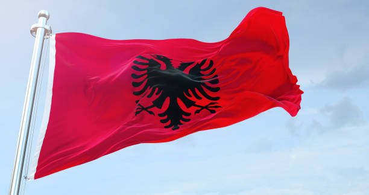

General Summary

Tourism in Albania is rapidly on the rise, as the country, long considered one of Europe's last hidden gems, has opened up politically and economically. Albania is now becoming a major destination for travelers, thanks to the country's rich history, unspoiled landscapes, and diverse culture. Social media, travel blogs, and international journalists have all played a part in promoting Albania’s stunning beaches, vibrant cities, and fascinating historical landmarks. This increased visibility has helped Albania establish itself as a must-see location for anyone looking for affordable, yet luxurious travel experiences in Europe.
Tourism in Albania
Albania’s beaches, such as those in Ksamil, Dhermi, and Saranda, are some of the most beautiful in the world, with their crystal-clear waters and breathtaking landscapes. However, the country also offers a very different kind of natural wonder: the Albanian Alps. These rugged mountains are a haven for hikers and adventurers looking for something off the beaten path. Places like Theth and Valbona attract visitors with their serene beauty, offering a peaceful retreat from busy city life. This duality — pristine beaches and rugged mountains — makes Albania a uniquely diverse travel destination.
Modern History
Albania spent much of the 20th century under a communist dictatorship, isolated from the rest of Europe and the world. Although this isolation set Albania back economically, it also preserved much of its cultural heritage and historical landmarks. Since the fall of communism in the early 1990s, Albania has been rapidly modernizing, with a renewed focus on tourism, education, and culture. Today, Albania is a vibrant, modern country that is proud of its past but looks towards a bright future as a welcoming destination for travelers from around the globe.
Cities to Visit
Tirana
Tirana, Albania’s capital city, is a bustling metropolis that is rapidly becoming one of the most exciting cities in Eastern Europe. With its high-rise buildings, modern cafes, and vibrant nightlife, Tirana is a city that blends old and new. Visitors can explore its rich history through landmarks like Skanderbeg Square and the National History Museum, while also enjoying its modern cultural scene.
Shkodër
Shkodër, one of Albania's oldest cities, offers a perfect blend of history and nature. Its picturesque streets, lined with Italian-style architecture, and views of the stunning Lake Shkodër make it a must-visit destination. Shkodër is also the gateway to the Albanian Alps, offering easy access to Theth and Valbona for nature lovers and hikers.
Korçë
Korçë, often called "Little Paris," is renowned for its rich cultural heritage, including traditional serenades and Albania’s first school, which opened in 1887. Its charming streets, lined with Ottoman-era buildings, offer a glimpse into Albania’s storied past while providing a relaxed, cultural experience for visitors.
The Future
Albania is rapidly preparing for the future, with several major infrastructure projects underway. The Vlora Airport, which is currently under construction, will provide easier access to Albania’s southern regions, helping to boost tourism. The revitalization of the country’s railway system will further enhance Albania’s transportation network, making it easier for both tourists and locals to travel across the country. In addition, the development of the Durres and Vlora Marina projects will help Albania position itself as a key player in the Mediterranean tourism market.